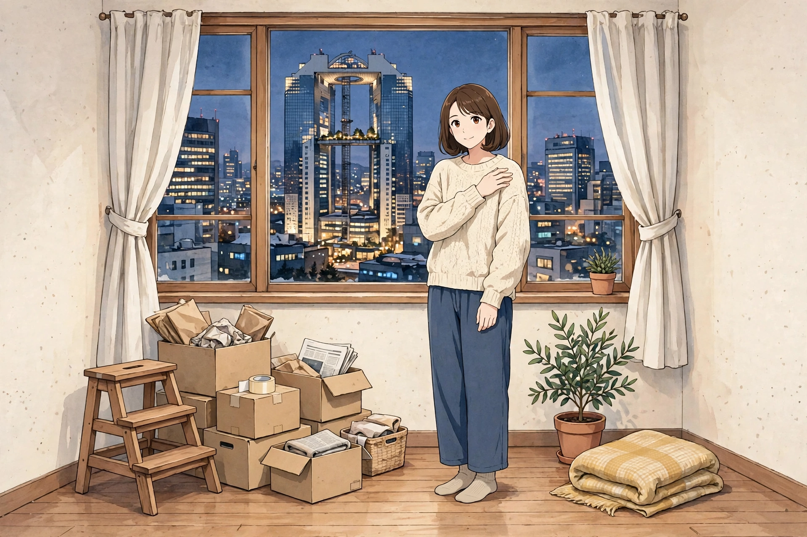

梅田で年末の忙しさで寝つきが気になるとき｜要因の整理とセルフケア、受診の目安ハウツー

梅田で働く・暮らす方へ。年末の忙しさで帰宅が遅くなり、布団に入っても「なかなか眠れない」「夜中に何度も目が覚める」「朝起きてもすっきりしない」と感じる寝つきの気になり方について、一般的な解説と考えられる要因の整理、年末の夜に取り入れられるセルフケア、医療機関への受診の目安をまとめました。一般的な健康情報としてお読みください。
#梅田 年末 寝つき#年末 忙しい 眠れない#寝つき セルフケア#年末 仕事帰り 睡眠#梅田 女性専用 サロン 睡眠
年末の忙しさで寝つきが気になるときとは（一般的な解説）
寝つきとは、布団に入ってから眠りに入るまでの時間の感じ方を表す言葉として使われることがあります。「横になってから、なかなか眠れない」「目を閉じても考えごとが浮かんでくる」「うとうとしては目が覚める」といった感じ方が、年末の忙しい時期に気になりやすくなることがあります。ふだんは気にならない方でも、仕事の追い込みや年内の用事が重なる12月は、帰宅が遅くなり、眠る時刻そのものが後ろへずれやすくなります。寝つきの感じ方には個人差が大きく、同じように忙しい日でも、すっと眠れる日もあれば、布団の中で時間が長く感じられる日もあるとされます。
大切なのは、「ふだんの自分と比べてどうか」「どんな日の夜に気になりやすいか」という視点です。帰宅が遅かった日なのか、会食が続いた週なのか、寒さが厳しい日なのか——気になりやすい場面を簡単に振り返っておくと、自分の傾向がつかみやすくなります。この記事では、年末の忙しさで寝つきが気になるときの一般的な解説と、背景として考えられる要因の整理からお伝えします。なお、寝つきの感じ方だけで体の状態を判断することはできません。気になる変化が続く場合は、後半の「受診の目安」もあわせてご確認ください。
考えられる要因の整理
1つ目は、仕事の追い込みと生活リズムのずれです。年末は年内の締め切りや引き継ぎ、年賀状や年越しの支度など、やることが重なり、帰宅が遅くなる日が続きやすくなります。眠る時刻が日によって大きくずれると、体が「眠る時間だ」と感じにくくなり、布団に入っても目がさえた感じが続くことがあるとされます。帰宅後に残りの仕事や連絡を片づけようとすると、頭の中が仕事モードのままになり、気持ちの切り替えに時間がかかることも挙げられます。
2つ目は、忘年会や会食が続く夜の刺激です。会食の席では、明るい照明やにぎやかな会話、飲食などが重なり、帰宅後も気持ちが高ぶったままになることがあるとされます。帰りが遅くなると入浴や就寝の準備も後ろへずれ、眠る直前まで慌ただしいままになることもあります。梅田の夜は、駅ビルや地下街、イルミネーションの明るさの中で過ごす時間も長くなりやすく、帰宅後に部屋の明かりを落としてゆっくりする区切りが作りにくい日もあるとされます。ただし、感じ方には個人差があり、「会食のせい」と決めつけられるものではありません。
3つ目は、冬の寒さと部屋の環境です。12月の梅田は、暖房のきいた室内と冷たい外気を行き来する移動が多く、帰宅したときに体が冷えてこわばっていると感じることもあります。布団に入ったときに足元が冷たく感じられると、なかなか眠りに入りにくい、という声も聞かれます。寝室が明るすぎたり、スマートフォンの画面を見続けたまま布団に入ったりすることも、眠りに入るまでの時間を長く感じさせる要素として挙げられます。東洋医学では、眠りは心経や腎経など、胸から手や脚へ巡る経絡のエリアと重ねて考えられてきた歴史があります。要因はひとつではなく、その日の予定や体調、寒さによって組み合わせが変わるため、思い当たるものをひとつずつ見直すことが大切です。
年末の夜のセルフケア
まずは「帰宅したら、温めてから布団に入る」ことです。その日の夜は、湯船にゆっくりつかって体全体を温める、温かい飲み物を一品添える、といった過ごし方は、冷えた体をいたわる基本とされます。足元が冷たく感じるときは、靴下を履いたまま布団に入る、湯たんぽや電気毛布を使うなど、足元を温める工夫も挙げられます。ただし、低温やけどに十分注意し、使い方の表示を確認してください。布団に入る前に、部屋の明かりを少し落として、静かな時間を短くでも作ることも、気持ちを切り替えるきっかけになるとされます。
次に「眠る前の画面時間を区切る」ことです。帰宅後にスマートフォンやパソコンの画面を見続けると、目がさえた感じが続きやすくなるとされます。眠る30分ほど前を目安に、画面から離れて、翌日の予定を紙に書き出して頭の中を整理する、軽く深呼吸をする、といった過ごし方も挙げられます。考えごとが浮かんでくる夜は、無理に眠ろうとするよりも、起きて温かい飲み物を飲み、眠気が来るのを待つほうが楽に感じられる方もいます。強くがんばる必要はありません。
翌日に備えた過ごし方としては、忙しい週でも昼食後に短い休憩を取る、予定を詰め込みすぎず、会食のない日は帰宅後の時間をゆるやかに過ごす、といった工夫が挙げられます。昼間に体を軽く動かす時間を作ることも、夜の過ごし方とあわせて大切とされます。ただし、セルフケアはあくまで日常の寝つきへの対処です。特定の方法に頼りすぎたり、気になる状態を我慢して様子を見続けたりしないようにしてください。眠れない夜が続く日は、ケアよりもまず休む時間を優先することも大切です。
受診の目安｜こんなときは医療機関へ
年末の忙しさで寝つきが気になる感じ方の多くは、生活リズムのずれや夜の刺激、寒さといった日常の要素が重なって感じられるとされますが、中には医療機関での確認を優先したいサインもあります。「寝つきの悪さや夜中の目覚めが数週間以上続く」「日中の強い眠気が続き、仕事や運転に支障が出る」「大きないびきとともに呼吸が止まるように感じる」「気分の落ち込みや不安が強く、眠ることがつらくなる」「足がむずむずして眠れない感じが続く」「胸の苦しさや動悸を伴う」といった場合は、セルフケアで様子を見続けず、内科や睡眠外来、心療内科など医療機関への受診をおすすめします。
また、寝つきの悪さと思っていた背景に、睡眠の状態や体の状態など、検査で初めて分かる要素が関係していることもあるため、気になる状態が続く場合は一度相談してみてください。当店のケアはリラクゼーションを目的としたボディケアで、睡眠や病気を診断したり、それらに対応したりするものではありません。医療機関での確認を優先したうえで、日常のコンディションを整える選択肢のひとつとしてご利用ください。
当店でのケアとサロンのご案内
ステラポラリスは、大阪・梅田エリアのレンタルサロンで施術する女性専用・完全予約制のサロンです。営業は月〜土17:00〜22:00（日曜休み）、施術はオイルマッサージと美容整体、料金は90分10,000円です。ご予約はLINE公式アカウント「ポラリス美容整体院」で受付中です。場所は大阪市北区堂山町12-5 ロイヤルハイツ梅田Ⅱ 303号室（レンタルサロンACE内）、中崎町駅から徒歩5分・阪急梅田駅から徒歩8分です。入室方法の詳細はご予約確定後にLINEでご案内します。
施術では、その日の体調や気になる部位をうかがい、肩や首、背中から、腰や脚までを順にほぐしながら、巡りを意識したケアを組み立てます。年末の忙しさで体が重く感じられる日は、静かに休む時間を大切にする進め方も選べますので、遠慮なくお伝えください。担当は施術歴30年・鍼灸師資格を持つセラピスト1名で、当店では鍼灸施術は行いません。関連するお悩みページ「眠りの浅さ」でも、体の見方やケアの考え方を紹介していますので、あわせてご覧ください。料金や営業時間の詳細は、メニュー・料金ページでもご確認いただけます。